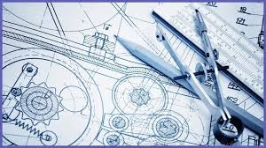

DEMUCO delivers innovative civil and structural engineering solutions for a better tomorrow.
Get in TouchDEMUCO Civil & Structural Engineers was started by a group of professional Engineers, with extensive project Engineering to service and provide infrastructural need demand for both public and private sector, and bridging the Engineering skills shortage gap. These professional Engineers had a combined extensive Project Engineering experience which included; Commercial buildings, Mining infrastructure, Industrial infrastructure, Municipal and Government infrastructure.
Due to this extensive knowledge and experience across all sectors of Civil and Structural Engineering, the company was divided into two divisions, namely the Mining and Industrial Infrastructure Division, and the Municipal and Government Infrastructure Division.
